Krog and the Black Swamp
The orcs' town, for Strength builds. Lord Targon is in the hall at 3076,3763, with the Lady of Krog's shop next to him; the spawn gate and the Krog Steward are at 3095,3754. South of Krog lies Maraket (bank at 3076,4007), north-west Samad, north the road to Dawat.
Krog is the kindest of the three arrivals: six quests can be done at level 8 to 11 on one loop down the road to Maraket, three of them without a fight, and together they give two pieces of armor, a 16-slot bag and more experience than everything on Valinor.
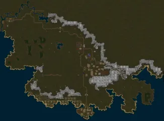
The Black SwampAE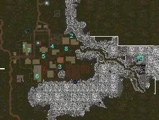
Krog: who gives quests, and whereAE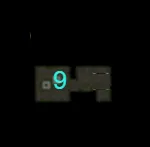
Krog, continuedAE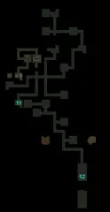
Krog, continuedAE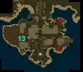
MaraketAE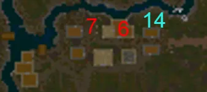
SamadAEKrog at a glance
| Quest | Level | Starts with | What | Reward |
|---|---|---|---|---|
| Warrior of KrogAE Guides · Wiki | 8 to 50 | Lord Targon | The patron's missions | See The patron |
25 pictures of Warrior of Krog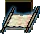 Scroll of Return: KrogAE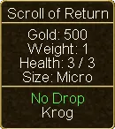 Scroll of Return: Krog (tooltip)AE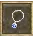 Necklace of KrogAE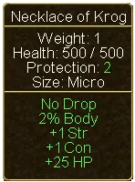 Necklace of Krog (tooltip)AE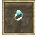 Ring of KrogAE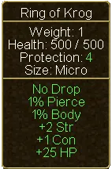 Ring of Krog (tooltip)AE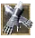 Gloves of KrogAE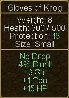 Gloves of Krog (tooltip)AE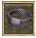 Belt of KrogAE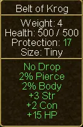 Belt of Krog (tooltip)AE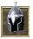 Helm of KrogAE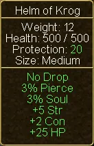 Helm of Krog (tooltip)AE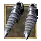 Boots of KrogAE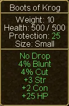 Boots of Krog (tooltip)AE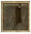 Cloak of KrogAE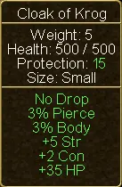 Cloak of Krog (tooltip)AE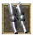 Leggings of KrogAE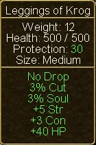 Leggings of Krog (tooltip)AE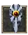 Guardian of KrogAE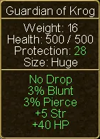 Guardian of Krog (tooltip)AE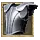 Armor of KrogAE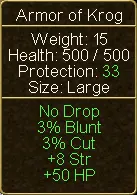 Armor of Krog (tooltip)AETargonAE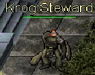 Krog StewardAE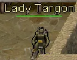 Lady TargonAE | ||||
| Leonard is LostAE Guides · Wiki | 8 | Oonga, north-east Krog (3150,3743) | Search the barrel on the west side of the hall | 350 gold |
2 pictures of Leonard is Lost | ||||
| Tree TroubleAE Guides · Wiki | 8 | Alchemist Singaford, in the hall | Click three sick trees on the road to Maraket, see Dander in Maraket's magic shop | Naturalist Greaves (+7 Int +5 Dex, level 10, needs 5 Int), 500 gold |
10 pictures of Tree Trouble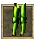 Naturalist GreavesAE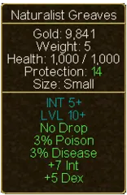 Naturalist Greaves (tooltip)AE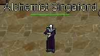 Alchemist SingafordAE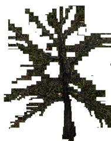 Afflicted TreeAE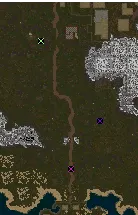 Tree Locations MapAEAfflicted Cedar Tree TagAE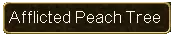 Peach Tree TagAEOak Tree TagAE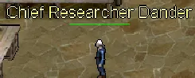 Chief Researcher DanderAE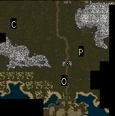 Afflicted_TreesWiki | ||||
| Formidable FormicidaeAE Guides · Wiki | 8 | Haburt, near the bank (3121,3763) | 40 Fire Ants (level 8) at the ant hill south of town (3095,3865) | Fire Ant Leg Bracer (+1 Con +5 health, level 8), 700 gold, about 39,600 experience pool |
| Protect Krog!AE Guides · Wiki | 8 to 10 | Warrog, the priest in the Temple of Ulthien | One Bat, one Snake, one Kobold (level 12) | Experience; Warrog heals you afterwards |
7 pictures of Protect Krog! | ||||
| Reclaiming What's MineAE Guides · Wiki | 9 to 11 | Ivogur, a ghost in the south of town (3131,3798) | Find 5 crates in his mine (entrance 2962,3912). No kills needed | Hard Leather Cap (+2 Str +1 Dex +2 Con, level 10), 1,500 gold, about 39,600 pool |
| Great DisrepairAE Guides · Wiki | 8 to 14 | Prudge, in the sewer (entrance 3019,3816) | A round of talks in Krog and Maraket, then six levers | Large Knapsack (16 slots), 1,000 gold, about 79,200 pool |
10 pictures of Great Disrepair | ||||
| Sting OperationAE Guides · Wiki | 9 to 16 | Jessicugh (3104,3780) | Bones in the scorpion pit, 20 Scorpion Stings, then the boss Schlag (level 20) | Lamp of Isos (+5 Soul), 30 Potions of Greater Healing, 20 repair potions |
13 pictures of Sting Operation | ||||
| Hole of TearsAE Guides · Wiki | 10 to 12 | The Kobold Prisoner, caged off the mountain path east of town (3273,3780) | 5 Cooked Spider Legs | A second way into the Temple of Agon |
4 pictures of Hole of Tears | ||||
| Agon's HandAE Guides · Wiki | 14 to 17 | The Minion of Agon, first level of the Temple of Agon (entrance 3114,3638) | Three hunts: Cultists (9), Kobold Brigands (16), Dragoons (12) | About 55,000 pool; opens Agon's Test |
| Agon's TestAE Guides · Wiki | 16 to 20 | The Shadow of Agon, lower sanctuary | Five Shadows (17) alone; 100 Kobolds; hit an Orc Guard | Shadow Cloak, Gloves, Helm, Leggings (+1 or +2 to all four attributes each, level 8) |
23 pictures of Agon's TestShadow CloakAEShadow Cloak (tooltip)AEShadow CloakAEShadow Cloak (tooltip)AEShadow CloakAEShadow Cloak (tooltip)AEShadow CloakAEShadow Cloak (tooltip)AEShadow of AgonAE  ShadowAE ShadowAE Shadow (tooltip)AEKobold MageAEKobold Mage (tooltip)AE Shadow (tooltip)AEKobold MageAEKobold Mage (tooltip)AE KoboldAE KoboldAE Kobold (tooltip)AE Kobold (tooltip)AE Kobold BrigandAE Kobold BrigandAE Kobold Brigand (tooltip)AEOrc GuardAEAgon Temple EnterancesWikiAgon Temple MapWikiAgons Test Quest Update 1WikiAgons Test Quest Update 2WikiAgons Test EndingWiki Kobold Brigand (tooltip)AEOrc GuardAEAgon Temple EnterancesWikiAgon Temple MapWikiAgons Test Quest Update 1WikiAgons Test Quest Update 2WikiAgons Test EndingWiki | ||||
| Honor in Battle, and five moreAE Guides · Wiki | 12 to 25 | The weapon trainers | See the trainers | The Orcish Warrior set (level 20) |
| Moklad is MissingAE Guides · Wiki | 15 to 20 | Jeqa in Samad (2648,3524) | A journal by a corpse east of Samad (2884,3498), then Kongodo in Dawat | Little; needed for a much later quest |
3 pictures of Moklad is Missing | ||||
| Payment in FullAE Guides · Wiki | 18 to 22 | Dunaga, near the farm in Maraket | The Kobold Chief (level 24) in the kobold village west of Maraket (2832,3924) | Dunaga's Cap (+2 to all four, +30 health, no requirement), or 500 faction |
6 pictures of Payment in Full | ||||
| SwampedAE Guides · Wiki | 18 to 22 | Rumpda, by the chicken pen (3141,3763) | 10 each of Swamp Slugs (27), Marsh Lights (8), Lizard Men (8), Shamblers (22), in that order | Bloody Rag of Rumpda (+3 Con +50 health, level 15), 1,650 gold |
| Favorable DealingsAE Guides · Wiki | When you leave | The Ambassador to Krog, in the hall | Carry word to Asicrel in Arda | 500 gold |
4 pictures of Favorable Dealings | ||||


The order
Level 8 to 11: one loop to Maraket
- In town: align, take a mission, do Leonard is Lost, and take Tree Trouble, Formidable Formicidae, Protect Krog!, Reclaiming What's Mine and Sting Operation.
- Go into the sewer south-west of town (3019,3816) to Prudge for Great Disrepair, then up to Aunt Rekant, above the provisioner (3092,3789).
- Walk the road south: the Cedar tree by the sewer entrance (2974,3852), the 40 Fire Ants at 3095,3865, the Peach tree south of the ants (3091,3903), the Oak tree west of the path before Maraket (3057,3954).
- In Maraket: Dander in the magic shop (3082,4006), then Unga in the middle of town, Teppu by the big campfire in the north-east, and Unga again. Use the bank.
- On the way back, Ivogur's mine (2962,3912): crate 3 to the north-west first, back to the entrance, then 5 and 4 to the south-west, down the trap door beside 4 for 1 and 2. Kill a bat, a snake and one kobold for Warrog wherever you meet them.
- In Krog: hand in to Singaford, Haburt, Ivogur (then open his crate south of where he stands, between the mountain and the nearest building), Warrog; then Rekant and Wuhn, who walks outside the provisioner. Wuhn gives you the order of the levers.
Two warnings for the loop. Large Fire Ants (level 25) stand among the Fire Ants and do not count; pull the small ones away. And when you tell Teppu about Unga, the answer "Unga is already married" pays 1,000 gold, the other 100.
Level 10 to 14: the levers and the scorpions
- Great Disrepair, the levers. On the bottom layer of the sewer, pull them in the order A, F, B, D, E, C. A wrong pull resets them all. If you fall into a hole, the ladder out comes up at lever F. Lever C is up the ladder after E. Run past what lives down there instead of fighting it. The Large Knapsack and the experience make this the best single quest of the region.
- Sting Operation, parts one and two. The scorpion pit is north of town (hole at 3131,3660). Find the bones and leave; do not fight Schlag yet. Then 20 Scorpion Stings from Scorpions (level 5). The 30 healing potions you get carry you through the next ten levels.
- Hole of Tears. Spiders (level 3) around town, cook five legs, bring them to the prisoner.
Level 12 to 17
- Missions, and hunting to bring your weapon skill to 15.
- Honor in Battle, if you use a sword (see below).
- Schlag (level 20, 500 to 650 health, poisons, calls scorpions) at about 14 to 16, with the cure and healing potions of part two.
- Agon's Hand. The Dragoons for its third hunt are in the swamp north-west of Krog and by Maraket; the wiki sends you to an island near Whisperdale for them, which is not needed.
Level 16 to 22
- Agon's Test. The four Shadow pieces give +7 to every attribute between them, need only level 8, and suit any build: the best gear of the region for the level you get it at. Its last step is to attack an Orc Guard (level 100). One hit is enough. You will be Wanted and probably killed or jailed, so take your gear off first, shoot from range if you can, and run.
- Stick, Jab, Twist and Never Stop at Lake Dresta (the goblins, north-west of Krog), if those are your weapons.
- Payment in Full. Decide before you answer Dunaga: the second answer gives Dunaga's Cap, the first gives 500 faction and no item. Take the cap.
- Swamped. It looks like a starter quest and is not: the Swamp Slugs of its first step are level 27, and the steps cannot be reordered.
Level 20 to 25
- The last trainer quests, and the Orcish Warrior pieces become wearable at 20.
- The region's one-off quests are finished by about level 22 to 25. Targon's missions go on to 50.
The orc weapon trainers
Seven quests, one for each weapon skill and one for finishing the other six. A trainer speaks to you once you have 15 in his skill. He hands you a Crude Orcish weapon, and only kills made with that weapon count.
| Quest | Trainer | Skill | Kill with his weapon | Reward (wearable at 20) |
|---|---|---|---|---|
| Honor in BattleAE Guides · Wiki | Orzgath Mugzluk, Krog | Large Blades | 40 Krog Rats (11), south-west of Krog | Orcish Warrior Belt (+1 Str +2 Con) |
| Stick, Jab, TwistAE Guides | Gar-Gar Mootarhk, Samad | Small Blades | 50 Goblins (16), Lake Dresta | Boots (+1 Str +1 Con) |
| Never StopAE Guides | Ox Juurnuhk, Samad | Unarmed | 100 Goblin Warriors (19), Lake Dresta | Greaves (+3 Str +1 Con, armor 25) |
| Crush SkullsAE Guides | Ulver Muurnahknahk, Maraket | Blunt | 50 Orc Renegades (20), north of Krog | Helm (+1 Str +2 Con) |
| Stay BackAE Guides · Wiki | Umduhk Dumdumuhk, Maraket | Polearms | 50 Ghosts (23), between Samad and Dawat (about 2840,3500) | Cape (+1 Str +1 Con) |
| Keep it SharpAE Guides · Wiki | Tyugh Bruurshk, Krog | Axes | 50 Orc Renegade Mages (25), by the pond north-north-east of Krog | Gauntlets (+2 Str, armor 20) |
| The Art of CombatAE Guides · Wiki | Bograhk Dargarkh, just east of the spawn gate | The six above | Plate (+4 Str +3 Con, armor 30) | |
3 pictures of The Art of Combat | ||||


The guides give older numbers here: 100 Orc Renegades at level 11 for Crush Skulls. The game now says 50, and the renegades are level 20.
Do your own weapon's quest; the rest is optional. One character may do all seven, but that means six weapon skills at 15. Piece for piece, the patron's Krog set is better than the Orcish Warrior set and has no level requirement, so an aligned warrior does not need it. The reason to do more of them is the experience (about 250,000 pool across the seven) and the Plate, which fills the chest until you can afford the Armor of Krog.
Hunting around Krog
| Level | Creature | Where |
|---|---|---|
| 8 to 11 | Fire Ants (8) | The ant hill south of town; mind the Large ones |
| 8 to 11 | Lizard Men (8), Dragoons (12) | By Maraket, around 3160,3975 |
| 8 to 11 | Skeletal Pups (6), Skeletons (10) | North of Krog, around 2970,3580 |
| 8 to 11 | Cave Spiders (8), Cave Rats (9) | Sogrun Mine in town (3154,3737), Ivogur's mine |
| 11 to 15 | Krog Rats (11) | South-west of Krog |
| 11 to 15 | Kobolds (12), with Brigands (16) and Mages (17) among them | The camp east through the pass; the village west of Maraket |
| 15 to 20 | Goblins (16 to 19) | Lake Dresta, north-west, halfway to Samad |
| 15 to 20 | Cult Leaders (16), Shadows (17) | Temple of Agon |
| 20 to 27 | Orc Renegades (20 to 25) | North, towards Dawat and Samad |
| 20 to 27 | Shamblers (22), Swamp Slugs (27) | Vorda Swamp, north-west |
Vorda Swamp is a trap at low level: its level 8 Lizard Men and Marsh Lights share the ground with level 22 and 27 creatures.
Leaving Krog
- The portal to Lotor's Summer Palace is north of town at 3110,3686. From the palace, portals go to Silvest and Whisperdale.
- The road north leads to Dawat, and from there east to Arda and Parian: the Highlands, where you go next. Take Favorable Dealings with you.